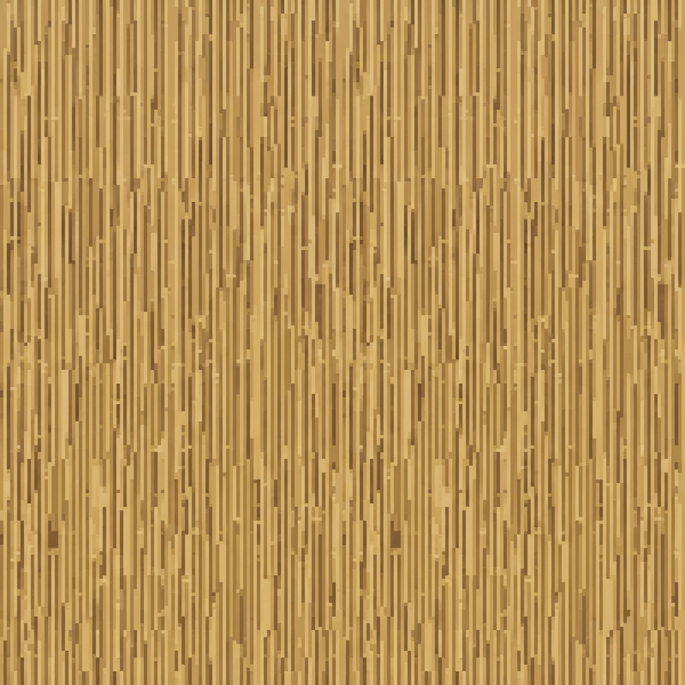
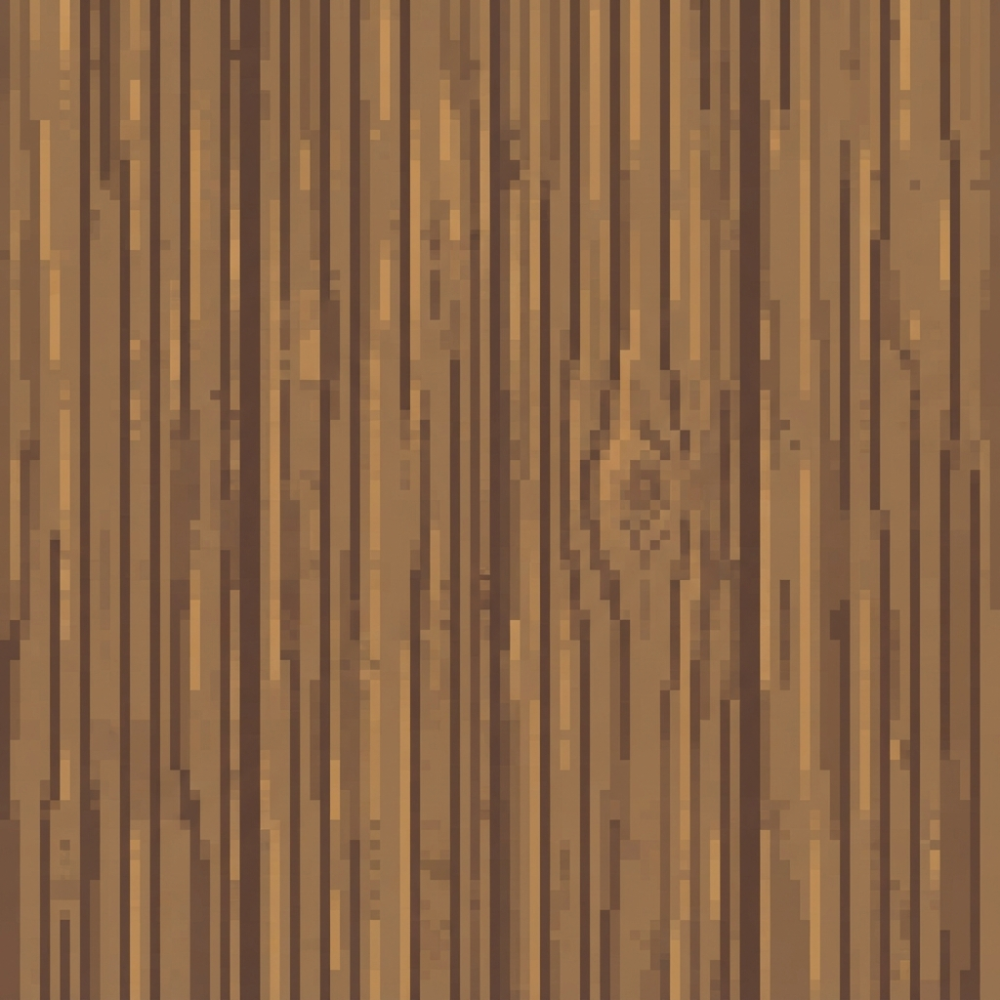
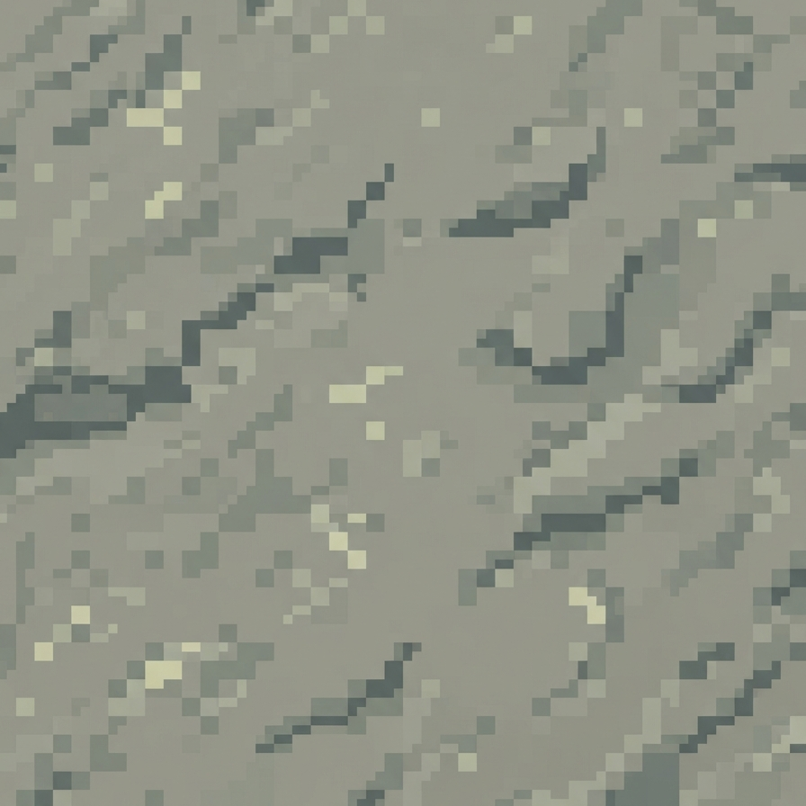
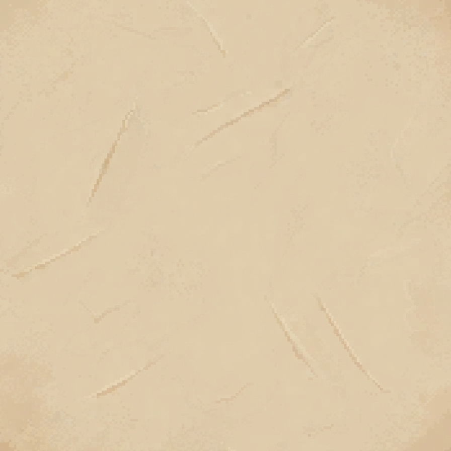
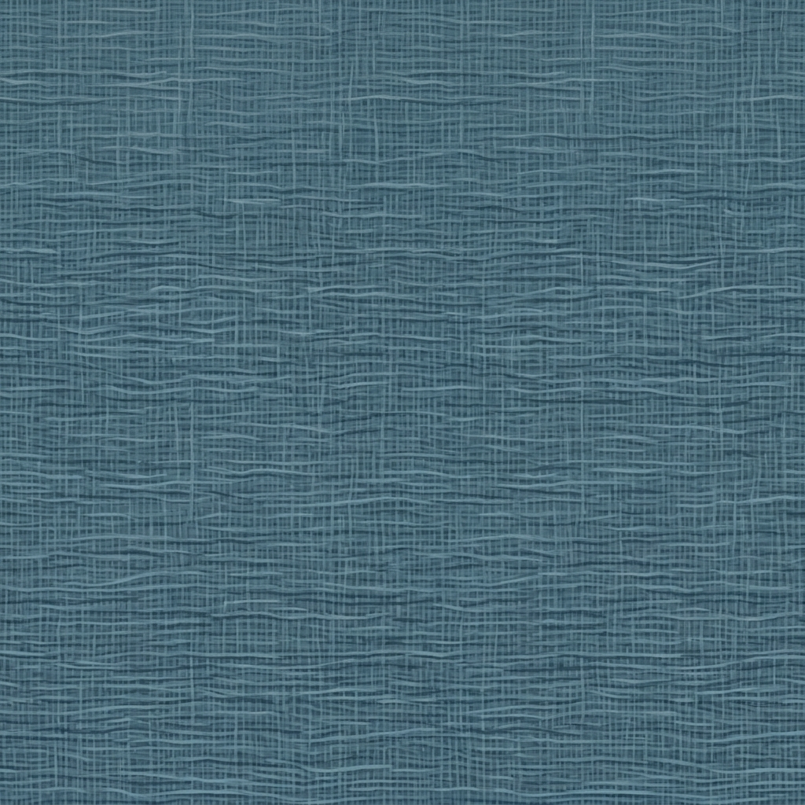

01 · Jerami

Detail serat saja, tanpa atap utuh atau lapisan atap tambahan.
Bahan disetujui untuk pilotBahan datar disiapkan melalui Stitch dalam project dan design system yang sama dengan bangunan ini. Tekstur menambahkan serat dan detail permukaan; bentuk atap, batu, balok dan banner tetap ditangani model 3D.
Bandingkan karakter bahannya dengan Town Center di sebelah kiri. Klik gambar untuk membuka kandidat pada resolusi native, tanpa resampling. Ulangan 3×3 memakai gambar yang sama tanpa perbaikan tepi; sambungan belum dinyatakan seamless.

Detail serat saja, tanpa atap utuh atau lapisan atap tambahan.
Bahan disetujui untuk pilot
Serat kayu tanpa susunan papan, paku, atau bingkai bangunan.
Bahan disetujui untuk pilot
Pori dan bekas pahat ringan. Susunan batu serta nat berasal dari model.
Bahan disetujui untuk pilot
Noda usia dan sapuan halus tanpa jendela, pintu atau rangka kayu.
Bahan disetujui untuk pilot
Tenunan datar tanpa bentuk bendera, tiang, lipatan besar, atau lambang.
Bahan disetujui untuk pilotSpesifikasi sumberAudit master lamaPrompt awalRevisi jeramiSumber kain terpilihHTML board sumber awal
Sumber mentah Stitch tetap utuh. Kandidat hanya dikonversi lossless ke PNG; plester dan batu dipotong ke area dalam untuk membuang tepi presentasi. Tidak ada gambar ulang, pengubahan palet atau pengecilan ke 32px. Atlas, UV dan material pilot Town Center sudah dibuat; source-spec tetap merupakan snapshot persiapan Tahap A. Hasil model bertekstur menunggu review Checkpoint B.